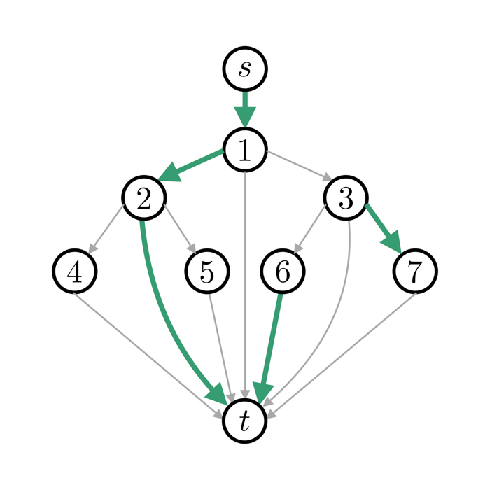
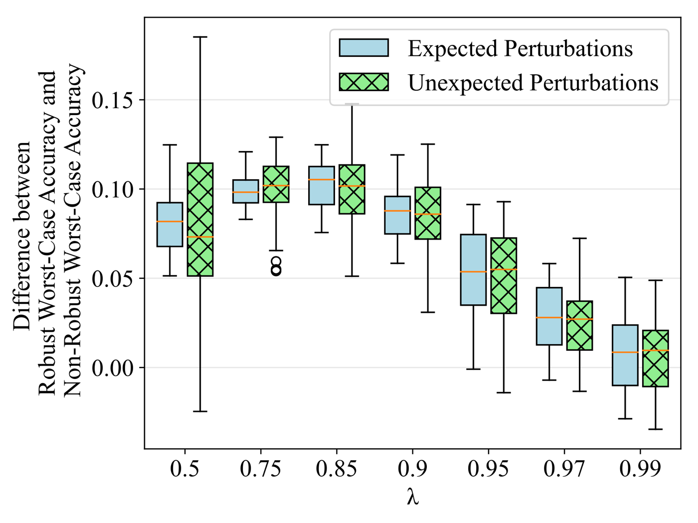
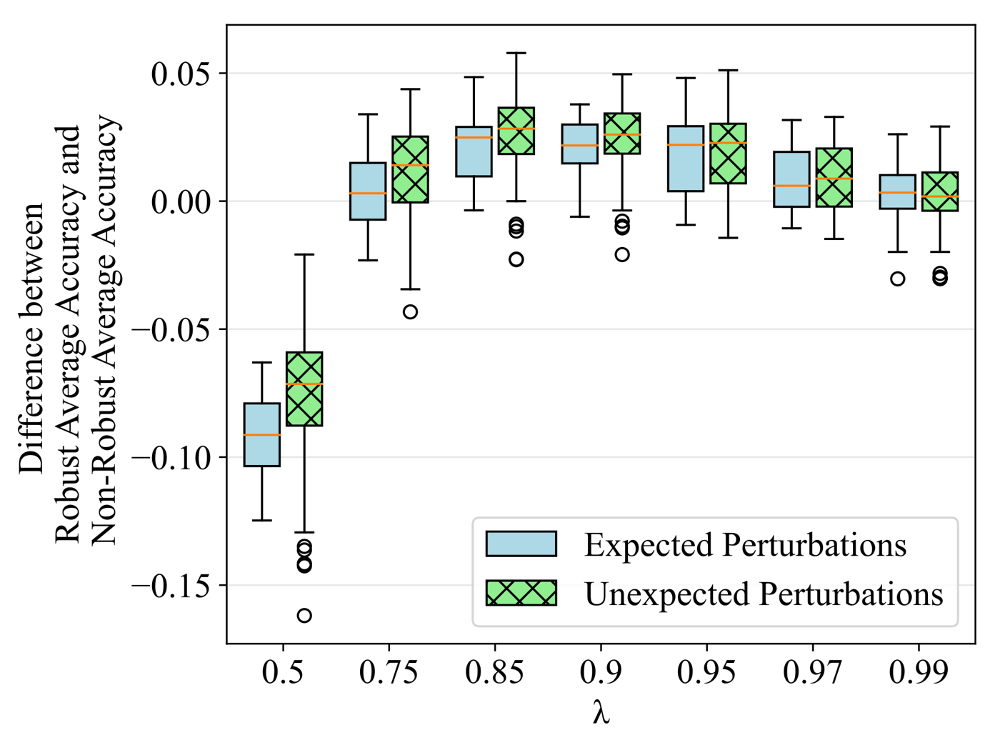
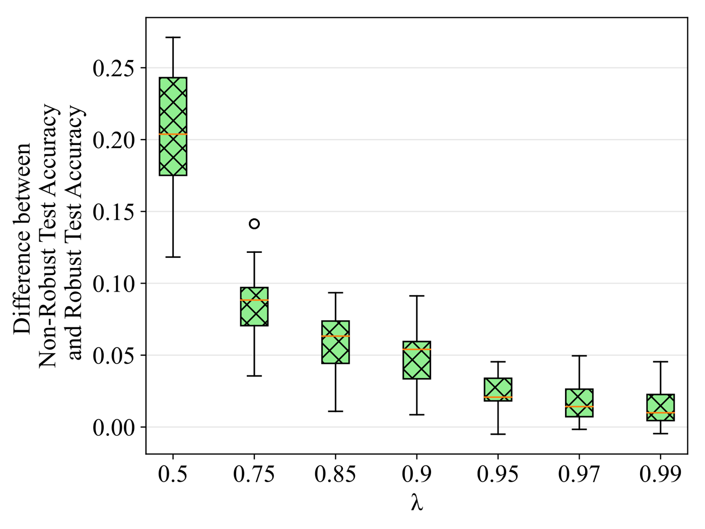
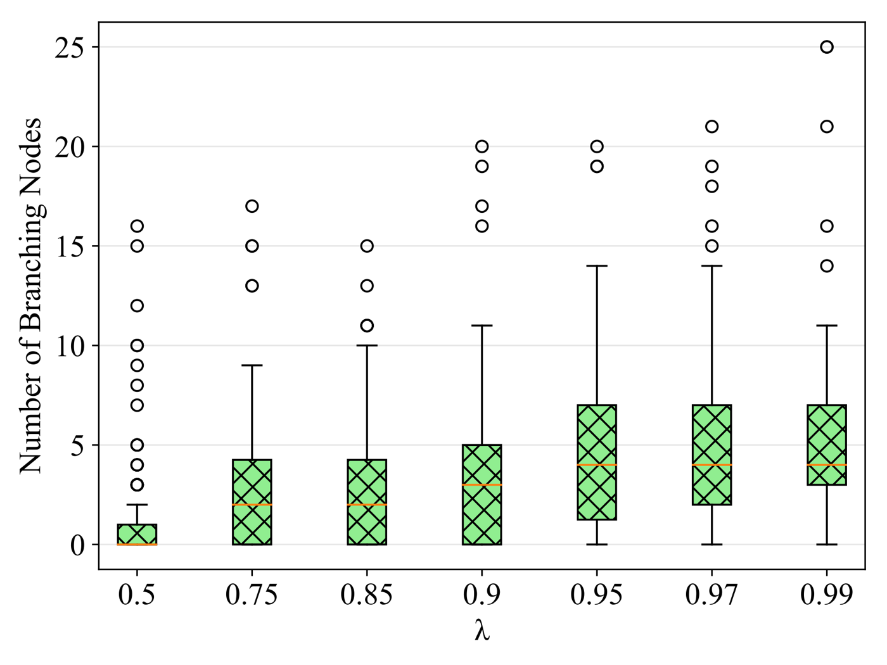

- 最悪の場合の精度 最大 +12.48%変化の分布が分かっている場合に、正則化した頑健でない最適な木と比べた改善の最大値。平均の精度の改善は最大 4.85% だった（論文の要旨）。
- \(\gamma=\log\frac{1}{1-\rho}\)、\(\epsilon=-|\mathcal I|\log\lambda\)各特徴量の値が変わらない確率 \(\rho\) と尤度比検定のしきい値 \(\lambda\) から、不確実性集合の費用と予算が決まる。\(\lambda=1\) なら予算は 0 で、通常の最適な木に戻る。
- 分岐の数の中央値 4 → 0不確実性集合を大きくするほど木は小さくなった。分岐の数の中央値は \(\lambda\in\{0.95,0.97,0.99\}\) で 4、0.9 で 3、0.75・0.85 で 2、0.5 で 0 だった。
調査データのように整数やカテゴリの特徴量が運用時に変わると、学習データで最適な木でも性能が落ちうる
公衆衛生や福祉のように影響の大きい分野では、解釈しやすく、しかも最適に学習した分類木が求められる。訓練と運用でデータの分布が同じなら、最適に学習した木は運用でも期待どおりに働くだろう。しかし実際には分布の変化がよく起きる。論文は変化を 2 種類に分ける。母集団からの標本の偏りで各標本の出やすさが変わる変化と、データの収集のしかたや環境が変わって個々の値が変わる変化で、この論文は後者の共変量の変化を扱う。自己申告の調査では、質問の言い回し、調査の場所、情報を集める人が変わるだけで回答がずれうる。
社会科学の応用では、データは調査や手作業の記録から来るので、整数やカテゴリ（性別や人種など）の値をとることが多い。論文はこの整数とカテゴリの特徴量の変化に絞って、最悪の場合の変化に対して最もよい性能を出す木を学習する。カテゴリの特徴量は one-hot 符号化し、深さ \(d\) 以下の木の集合 \(\Pi_d\) から次の問題の解を求める。
木は摂動 \(\boldsymbol\xi\) を見る前に決めなければならない。特徴量が整数なので \(\Xi\) は離散の集合になり、目的関数は指示関数の和で非線形かつ不連続である。離散の不確実性集合はロバスト最適化でもあまり研究されておらず、内側の最小化を双対化する通常の手は、強双対性が成り立たないので使えないことが多い。
値を 1 動かす費用を標本と特徴量ごとに決め、データ全体で共有する予算 ε の範囲で整数の摂動を許す
論文の不確実性集合は標本 \(i\) の特徴量 \(f\) を 1 動かす費用 \(\gamma^i_f\) と、データ全体の予算 \(\epsilon\) で決まる。
先行研究の Bertsimas らや Chen ら、Vos と Verwer の GROOT は、標本ごとに \(\|\boldsymbol\xi^i\|_p\le\epsilon\) とする行ごとの集合を使っていた。論文はこの集合が動機の応用に合わない理由を 3 つ挙げる。摂動が整数でないので整数やカテゴリの値として現実的でないこと、すべての標本が同時に最悪の値をとれる長方形の集合で保守的すぎること、変化の費用がすべての標本と特徴量で同じになることである。提案の集合は摂動を整数に限り、予算をデータ全体で共有し、費用を標本と特徴量ごとに変えられる。片側だけの変化やカテゴリの特徴量への拡張は付録で扱っている。
正しく分類した標本の数を標本ごとの最大流として書くと、問題は線形の二段階ロバスト最適化になる
正解数の数え方には同じグループの FlowOCT（Aghaei ら）の考え方を使う。標本 \(i\) ごとに、源 \(s\) から根を通って木を下り、正しいクラスを予測する節点から吸い込み \(t\) に向かう容量つきのグラフを作る。分岐の判定 \(x^i_f+\xi^i_f\ge\theta+1\) で進む辺だけが容量 1 をもつので、摂動後の標本が正しく分類されるのは最大流が 1 のときだけになる。

こうして問題は「木を選ぶ → 攻撃者が摂動を選ぶ → 各標本の流れを決めて正解数を数える」という線形の二段階ロバスト最適化に書き直せる。第 2 段の流れの変数は摂動を見てから決めてよい。元の問題と同値だが、各段の目的と制約が線形になる。
内側の最大流を最小カットに双対化し、攻撃者の最悪の摂動を安い順に積む部分問題で、破られた制約を足していく
内側の最大流問題は強双対性が成り立つので、双対の最小カット問題に置き換えると単段のロバスト混合整数最適化になる。制約の数が膨大なので、論文は制約をすべて外した主問題から始め、分枝限定法の途中で整数解が出るたびに、破られている制約を部分問題で探して足す。
部分問題は与えられた木に対する攻撃者の最悪の摂動を求める問題で、次の 4 つの観察から簡単に解ける。各標本は正解か誤りかのどちらかで目的に 1 か 0 を足すこと、すでに誤分類されている標本を動かしても得がないこと、正しく分類された標本を誤らせるなら最も安い方法で動かせばよいこと、その最も安い方法は標本ごとに別々に求められることである。そこで、標本ごとに誤ったクラスで終わる木の道をすべて調べて、誤分類させる最小の費用 \(\psi^i\) を求め、\(\psi^i\) の小さい順に予算 \(\epsilon\) が尽きるまで標本を動かす。計算量は \(\mathcal O(|\mathcal L||\mathcal I|+|\mathcal I|\log|\mathcal I|)\) である。さらに、もともと誤分類される標本は最悪の場合にも正しくならないことを表す標本ごとの制約を加えると、求解時間が 1 桁短くなった（電子付録）。
値が変わらない確率 ρ と尤度比検定のしきい値 λ から、費用 γ と予算 ε を決める
変化について知っていることが少ないとき、論文は最大エントロピーの原理に従い、摂動の大きさ \(|\xi^i_f|\) を、値が変わらない確率 \(\rho^i_f\) をパラメータとする幾何分布とし、向きは等確率とする。摂動の尤度と摂動がない場合の尤度の比が \(\lambda^{|\mathcal I|}\) 以上なら帰無仮説を棄却しない、という尤度比検定を書き直すと、ちょうど不確実性集合の形になる。
\(\rho\) は分野の知識から決め、\(\lambda\) で頑健さの度合いを調整する。\(\lambda=1\) なら予算は 0 で FlowOCT と同じ問題になり、\(\lambda\) を下げるほど多くの変化に備える。\(\lambda\) は交差検証などで選べる。幾何分布は分野の知識が少ないときの一般的な選び方で、知識があればほかの分布も使えると論文は述べている。
図2 \(\rho\) と \(\lambda\) から決まる費用と予算（論文 4 節の式から解説者が作った計算機）。すべての標本と特徴量で同じ \(\rho\) を使った場合の値で、予算はデータ全体で共有されるので、実際には一部の標本だけが大きく動かされることもある。
どんな摂動でも予測を変えないことを求める Bertsimas らの方法より、提案法の問題は広い解の集合を探せる
Bertsimas らの最適決定木も正解数を目的にするが、頑健さの考え方が違う。すべての標本について、どんな摂動を受けても予測が摂動前と同じであることを制約として求める。論文はこの問題が、提案法の問題に制約を足したものと同値であることを示した。そのため Bertsimas らの問題の最適解は提案法の問題でも実行可能だが、逆は成り立たないことがある（命題）。提案法は分岐が多く、名目と最悪の場合の誤分類がどちらも少ない木も候補にでき、保守的でない解が得られうる。予算 \(\epsilon\) が大きくなると、標本がどう動いても同じ葉に着くことを保証できるのは分岐のない深さ 0 の木だけになる。
Chen らと Vos らの方法は、摂動のもとでの目的を計算する点は提案法に近いが、各分岐で情報利得や Gini 不純度を最適にする貪欲法なので、最悪の場合の精度が最適になる保証はない。
λ が 0.75〜0.9 のとき、最悪の場合と平均の精度がともに改善し、想定と違う変化でも改善の幅はほとんど変わらなかった
UCI の 12 データ（整数、カテゴリ、またはその両方。標本数は表で 47〜3,196、元の特徴量の数は 4〜36）を学習 80%・テスト 20% に分けた。\(\rho\) は特徴量ごとに平均 0.6・0.7・0.8・0.9、標準偏差 0.2 の正規分布から引き、\(\lambda\) を 0.5〜0.99 の 7 通り、深さを 2〜5 として、計 1,536 のインスタンスを作った。比較相手は、予算を 0 にして分岐の数への罰則を検証データで選んだ、頑健でない最適な木である。テストデータは、想定どおりの幾何分布で 5,000 通りに動かしたもののほか、\(\rho\) をずらした「想定外の」変化でも 5,000 通りずつ作り、最悪と平均の精度を測った。Gurobi 9.0.1 で、制限時間は 7,200 秒である。


頑健な木は、変化があるときに最悪の場合と平均の精度がおおむね高かった。\(\lambda\) が 0.75〜0.9 の範囲がどちらの指標でもよく、予算が小さすぎると変化に備える余地が足りず、大きすぎると保守的になって精度を失う。想定どおりの変化と想定外の変化で改善の幅にほとんど差がなかったことから、論文はモデルの想定が多少ずれても頑健な木が得られるとしている。変化がないテストデータでの精度の低下（頑健さの代償）は、\(\lambda\) が 0.75〜0.9 のとき平均で 0.05〜0.1 で、\(\lambda\) を下げるほど大きくなった。


頑健さには木を小さくする働きもあった。分岐が多いほど安い摂動で誤らせる機会が増えるので、予算が大きいと分岐の少ない木が選ばれる。計算時間は不確実性集合が大きいほど長く、最適性のギャップが 50% を超えたインスタンスは \(\lambda=0.5\)・0.85・0.95・1 でそれぞれ 72・32・7・0 個だった。頑健でない場合（\(\lambda=1\)）は、\(\lambda=0.95\) より 48 個多く最適まで解けた。付録の比較では、二値の特徴量だけのデータで、提案法の最悪の場合の精度の改善は Bertsimas らの方法より平均で最大約 15% 大きく、頑健さの代償は提案法が平均 0.25 未満、Bertsimas らの方法が約 0.4 だった。
論文の本文は標本数の範囲を「124〜3,196」と書いているが、データの表では soybean-small が 47、monk3 が 122 なので、このページは表の値を使った（解説者の注）。
フローにもとづく最適決定木の定式化を、離散の不確実性集合をもつ二段階のロバスト最適化に広げた研究である
この論文は標本ごとの最大流で正解数を数える FlowOCT の定式化から出発し、予算 0 ならそれに戻る。同じ USC のグループの、公平性の制約を入れた Fair OCT・FairOCT や処方的な木と同じく、MIO の定式化に要求を足す流れにある。実装はオープンソースの Python パッケージ ODTLearn に含まれている。
頑健さの扱いでは、学習データの誤差に備えて「予測が変わらないこと」を求める Robust Classification より保守的でない問題を解き、テスト時の箱の形の攻撃に備える ROCT とは違って、整数の摂動と、データ全体で共有する予算を扱う。論文はこの問題と Wasserstein 距離を使う分布ロバスト最適化の関係も付録で示している。
このページの数値・式・図は arXiv 版（2310.17772、2025 年 8 月更新の版）による。Operations Research の出版版（Articles in Advance）は INFORMS のサイトが自動取得を受け付けなかったため、照合していない。書誌は Crossref で確認した。Crossref に巻・号・ページがまだないので、BibTeX では省いた。
@article{justin2026learning,
title = {Learning Optimal Classification Trees Robust to Distribution Shifts},
author = {Justin, Nathan and Aghaei, Sina and G{\'o}mez, Andr{\'e}s and Vayanos, Phebe},
journal = {Operations Research},
year = {2026},
doi = {10.1287/opre.2024.0711}
}